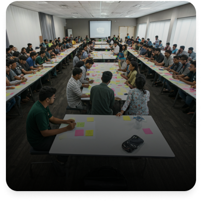
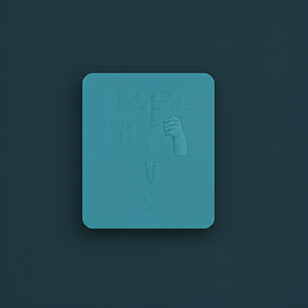
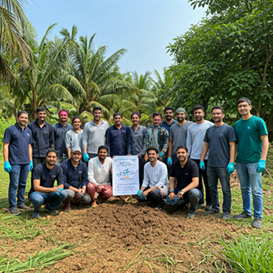
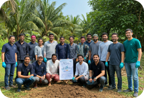
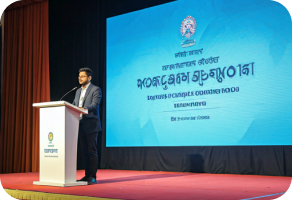
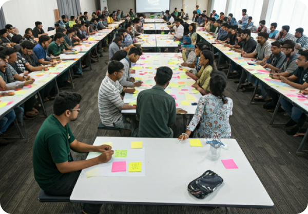

OCT 15, 2023
The Digital Front: Fighting Election Misinformation
How youth-led fact-checking units are making a difference in the local digital landscape...
Read More ›
Bangladesh Youth Renaissance (BYR) is a dynamic, non-partisan platform dedicated to nurturing the next generation of civic leaders. We believe in the untapped potential of Bangladeshi youth to shape a more transparent, inclusive, and progressive nation through informed action and cultural pride.
"A civilized Bangladesh led by a generation that embodies integrity, civic responsibility, and inclusive growth, standing tall as a beacon of progress in Asia."
"To shape a generation of informed citizens by providing the tools, dialogue spaces, and mentorship needed to navigate challenges and drive sustainable national impact."
Tackling the most critical challenges facing Bangladesh's youth today through targeted, evidence-based initiatives.

Building awareness of rights, democratic values, and national governance through...
Equipping youth with media literacy skills to identify and resist digital manipulation.

Creating safe, structured platforms for engaging in informed dialogue with civic leaders.
Training responsible leaders through workshops that develop civic character and mentorship.

Channeling youth energy into meaningful community service and national solidarity.
Celebrating Bangladesh's heritage as an anchor for national identity and cohesion.
YOUTH ENGAGED
SUCCESS EVENTS
GLOBAL PARTNERS
ACTIVE VOLUNTEERS
Promote awareness and responsible citizenship among youth aged 8-35.
Create neutral platforms for civil discourse between diverse youth groups and institutions.
Develop a generation of responsible leaders through value-based workshops.
Encourage youth participation in social development and national progress.
Counter digital misinformation and harmful narratives in shared spaces.
Fostering digital literacy and innovation among the youth to support the nation's vision for 2041.
Promoting inclusive education and peaceful, just societies through youth-led advocacy.
Engaging the generation that will manage Bangladesh's climate resilience and water management.
Deploying anti-polarization dialogue programs and civic education to ensure social harmony.
Upskilling the workforce to ensure economic stability and competitive national advantage.
Independent of political affiliation and serving all youth equally.
Full accountability to our members, partners, and the public.
Welcoming youth of all backgrounds, genders, and regions.
Encouraging evidence-based reasoning and independent judgment.
Celebrating Bangladesh's heritage and democratic aspirations.
Working with government, civil society, and academia to scale impact.
"We believe rights come with duties, and citizenship is active."



Join our core community for exclusive access to fellowships and national dialogues.
Apply NowDedicate your skills to grassroots movements and meaningful community impact projects.
Get StartedCollaborate as an institution to scale our reach and impact across Bangladesh.
Inquire TodayHow youth-led fact-checking units are making a difference in the local digital landscape...
Read More ›An in-depth analysis of the current education system and its alignment with future market needs...
Read More ›Exploring the success stories of BYR satellite units in Chittagong and Sylhet...
Read More ›Absolutely not. BYR is a strictly non-partisan civic platform. Our goal is to promote democratic values and civic responsibility regardless of political affiliation.
You can join the Civic Fellowship by applying through our 'Programs' page when the application window is open. Stay tuned to our newsletter for updates.
No, there are no membership fees to join our general community. Some specialized workshops may have a nominal registration fee to cover materials.
Yes, we actively seek partnerships with educational institutions, NGOs, and corporate CSR wings. Please reach out via our contact form.
Have questions or want to collaborate? Our team is ready to connect and explore how we can strengthen Bangladesh together.